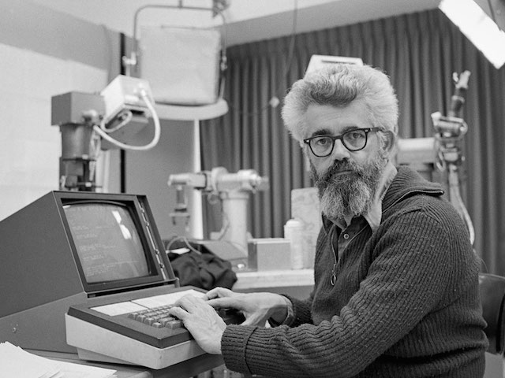
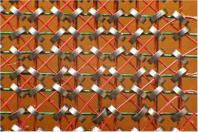

The Never Changing Face of Immutability
Chris Howe-Jones
@agile_geek
15th December 2015
The Never Changing Face of Immutability

Who am I?
Name: Chris Howe-Jones
Job Title: Technical Navigator
Twitter: @agile_geek
Github: github.com/chrishowejones
Blog: chrishowejones.wordpress.com
Credentials
- 28 years of pushing data around
- Procedural/OOP/FP
- Architecture & Design
- RAD/Agile/Lean
- CTO
History Lesson

Once upon a time..
Book Keeping
- List of entries in a ledger
- No 'crossing out'!
Dawn of Computing

- Math
- Transient storage
60's-90's

- Spot the expense?
- Memory
- Tape
- Disk
21st Century
Spot the expense?
- Developers
Cheap resources: SSD/Disk, Memory, CPU
And..

In place computing

- Update data in place
- Reuse expensive real estate
RDBMS

- Data updated
- Values overwritten
- Reuse memory and disk
*